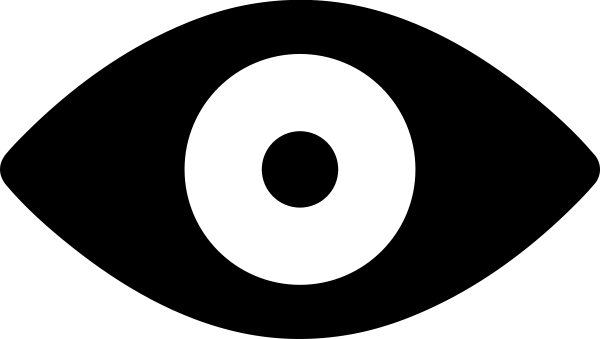

About
PouchDB
Pouchvision source
Pouchvision visualizes PouchDB API calls. PouchDB is a javascript database that lets you sync your data with CouchDB and other PouchDB instances. Want to learn more? Try the intro
Protip: Drag and drop on docs onto parameters that require doc, docid, or rev Protip: Click a document to see its contentsPouchDB
Pouchvision source
